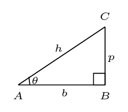
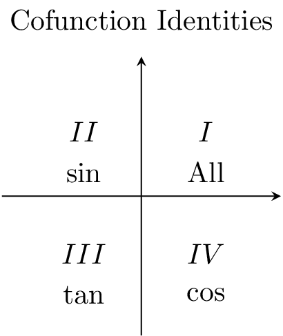
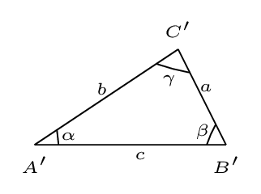

Appendix A Mathematical Relations
Algebric:
-
Logerithmic Formulae: A common logerithim is defined for a logerithm of base 10 and natural logerithm is defined for a base \(e\text{.}\) If\begin{equation*} \log a=x, \end{equation*}then\begin{equation*} a=10^{x}, \end{equation*}and if\begin{equation*} \ln a=x, \end{equation*}then\begin{equation*} a=e^{x}\text{,} \end{equation*}also\begin{equation*} \log m+\log n = \log mn; \end{equation*}\begin{equation*} \log m-\log n = \log\frac{m}{n}, \end{equation*}\begin{equation*} \log m^{n}= n \log m. \end{equation*}Similarly we can obtain the relations for natural log (ln).
-
Quadratic Formula: If \(ax^{2}+bx+c=0,\) then the root of quadratic equation is given by\begin{equation*} x=\frac{-b \pm \sqrt{b^{2}-4 a c}}{2 a} \end{equation*}where\begin{equation*} b^2-4ac =D \end{equation*}is called discriminant.
Geometric Formulae:
-
Circumference of a circle of circle of radius r, \(\, C= 2\pi r\text{;}\)
-
Area of a circle of circle of radius r, \(\, A = \pi r^{2};\)
-
Volume of a sphere of radius r, \(\, V=\frac{4}{3}\pi r^{3};\)
-
Surface area of a sphere of radius r, \(\, A=4\pi r^{2};\)
-
Volume area of a cylinder of radius r and height h, \(\, V=\pi r^{2}h;\)
-
Cylindrical surface area of a cylinder of radius r and height h, \(\, S=2\pi r h\)
-
Congruent Triangles: In two triangles if corresponding SAS (side angle side) or SSS (side side side) are equal then triangles are congruent.
-
Similar Triangles: If corresponding AAA (angle angle angle) of two triangles are equal then the triangles are called similar triangles. In that case the ratio of corresponding sides of these triangles are equal.
Trigonometric Identities: in right angled triangle \(\vartriangle ABC,\)

-
\begin{equation*} h^{2}=p^{2}+b^{2} \end{equation*}
-
\begin{equation*} \sin\theta=\frac{p}{h}; \, \quad \cos\theta=\frac{b}{h}; \, \quad \tan\theta=\frac{p}{b} \end{equation*}
-
\begin{equation*} \sin\theta \csc\theta=1; \, \quad \cos\theta\sec\theta=1; \, \quad \tan\theta\cot\theta=1; \end{equation*}
-
\begin{equation*} \frac{\sin\theta}{\cos\theta}=\tan\theta \end{equation*}
-
\begin{equation*} \sin2\theta = 2\sin\theta\cos\theta; \, \quad \cos2\theta = \cos^{2}\theta-\sin^{2}\theta=2\cos^{2}\theta-1=1-2\sin^{2}\theta. \end{equation*}\begin{equation*} =2\cos^{2}\theta-1=1-2\sin^{2}\theta. \end{equation*}
-
If \(2\theta = \alpha,\) then\begin{equation*} \sin\alpha=2\sin\frac{\alpha}{2}\cdot\cos\frac{\alpha}{2}; \, \quad \cos\alpha=1-2\sin^{2}\frac{\alpha}{2} = 2\cos^{2}\frac{\alpha}{2}-1. \end{equation*}
-
\begin{equation*} \sin(-\theta) = -\sin\theta; \, \quad \cos(-\theta) = \cos\theta; \end{equation*}
-
\begin{equation*} \sin(\theta \pm \frac{\pi}{2}) = \pm \cos\theta; \, \quad \cos(\theta \pm \frac{\pi}{2}) = \mp \sin\theta. \end{equation*}
-
\begin{equation*} \sin(\alpha\pm\beta)=\sin\alpha\cos\beta\pm\cos\alpha\sin\beta; \end{equation*}\begin{equation*} or, \, \cos(\alpha\pm\beta)=\cos\alpha\cos\beta\mp\sin\alpha\sin\beta \end{equation*}
-
\begin{equation*} 2\sin \alpha\cdot\sin\beta = \cos(\alpha-\beta) - \cos(\alpha+\beta); \end{equation*}\begin{equation*} or, \, 2\cos \alpha\cdot\cos\beta = \cos(\alpha+\beta) + \cos(\alpha-\beta) \end{equation*}
-
\begin{equation*} 2\sin \alpha\cdot\cos\beta = \sin(\alpha+\beta) + \sin(\alpha-\beta); \end{equation*}\begin{equation*} or, \, \quad 2\cos \alpha\cdot\sin\beta = \sin(\alpha+\beta) - \sin(\alpha-\beta) \end{equation*}
-
\begin{equation*} \sin\alpha+\sin\beta = 2\sin\frac{\alpha+\beta}{2}\cos\frac{\alpha-\beta}{2}; \end{equation*}\begin{equation*} or, \, \cos\alpha+\cos\beta = 2\cos\frac{\alpha+\beta}{2}\cos\frac{\alpha-\beta}{2} \end{equation*}
-
\begin{equation*} \sin\alpha-\sin\beta = 2\cos\frac{\alpha+\beta}{2}\sin\frac{\alpha-\beta}{2}; \end{equation*}\begin{equation*} or, \, \cos\alpha-\cos\beta = -2\sin\frac{\alpha+\beta}{2}\sin\frac{\alpha-\beta}{2} \end{equation*}
-
\begin{equation*} \sin^2 x-\sin^2 y = \sin (x+y)\sin(x-y) \end{equation*}
-
\begin{equation*} \cos^2 x-\cos^2 y = -\sin (x+y)\sin (x-y) \end{equation*}
Co-function Identities Cofunction identities relate trigonometric functions of complementary angles. The ASTC rule All, sine, tan, cos. meaning: In Quadrant 1 All functions are positive. In Quadrant II, Sine function is positive. In Quadrant III, Tangent function is positive. In Quadrant 4, Cosine function is positive.

In Quadrant I & II:
\begin{align*}
\sin(\frac{\pi}{2} \pm \theta) \amp = \cos\theta \\
\cos(\frac{\pi}{2} \pm \theta) \amp = \mp \sin\theta \\
\tan(\frac{\pi}{2}\pm \theta) \amp = \mp \cot\theta
\end{align*}
In Quadrant II & III:
\begin{align*}
\sin(\pi\pm \theta) \amp = \mp \sin\theta \\
\cos(\pi\pm \theta) \amp = -\cos\theta \\
\tan(\pi\pm \theta) \amp = \pm \tan\theta
\end{align*}
In Quadrant III & IV:
\begin{align*}
\sin(\frac{3\pi}{2} \pm \theta) \amp = -\cos\theta \\
\cos(\frac{3\pi}{2}\pm \theta) \amp = \pm \sin\theta \\
\tan(\frac{3\pi}{2}\pm \theta) \amp = \mp \cot\theta
\end{align*}
In Quadrant IV & I:
\begin{align*}
\sin(2\pi \pm \theta) \amp = \pm \sin\theta \\
\cos(2\pi\pm \theta) \amp = \cos\theta \\
\tan(2\pi\pm\theta) \amp = \pm \tan \theta
\end{align*}
Trigonometric Laws: in any \(\vartriangle A' B' C'\) with sides \(a, \,b,\) and \(c\) and angles \(\alpha,\,\beta,\) and \(\gamma\)

-
Law of sines:\begin{equation*} \frac{\sin\alpha}{a}=\frac{\sin\beta}{b}=\frac{\sin\gamma}{c} \end{equation*}
-
Law of cosines:\begin{equation*} c^{2}=a^{2}+b^{2}-2ab\cos\gamma \end{equation*}
Binomial Theorem:
\begin{equation*}
(a+b)^{n} = \left[ {}^{n}C_{0} a^n + {}^{n}C_{1} a^{n-1}b +{}^{n}C_{2} a^{n-2}b^2 +\cdots +{}^{n}C_{n} a^{n-n}b^n \right]
\end{equation*}
\begin{equation*}
or, \, (a+b)^{n} = a^{n}+na^{n-1}b+\frac{n(n-1)a^{n-2}b^{2}}{2!}+\frac{n(n-1)(n-2)a^{n-3}b^{3}}{3!}+\cdots
\end{equation*}
Power Series:
\begin{equation*}
(1+x)^{n} =1+nx+\frac{n(n-1)x^{2}}{2!}+\frac{n(n-1)(n-2)x^{3}}{3!}+\cdots \quad (|x| \lt 1)
\end{equation*}
\begin{equation*}
e^{x}=1+x+\frac{x^{2}}{2!}+\frac{x^{3}}{3!}+\cdots \quad (\forall x)
\end{equation*}
\begin{equation*}
\ln(1+x)=x-\frac{x^{2}}{2}+\frac{x^{3}}{3}-\frac{x^{4}}{4}+\cdots \quad (|x| \lt 1) or, (-1\lt x\leq 1.)
\end{equation*}
\begin{equation*}
\sin x= x-\frac{x^{3}}{3!}+\frac{x^{5}}{5!}-\frac{x^{7}}{7!}+\cdots \quad (\forall x)
\end{equation*}
\begin{equation*}
\cos x= 1-\frac{x^{2}}{2!}+\frac{x^{4}}{4!}-\frac{x^{6}}{6!}+\cdots \quad (\forall x)
\end{equation*}
\begin{equation*}
\tan x= x+\frac{x^{3}}{3}+\frac{2x^{5}}{15}+\frac{17x^{7}}{315}+\cdots \quad (|x| \lt \frac{\pi}{2})
\end{equation*}
\begin{equation*}
^nC_r = \frac{n!}{r!(n-r)!}.
\end{equation*}
\begin{equation*}
^nP_r = \frac{n!}{(n-r)!}.
\end{equation*}